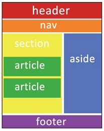

Las etiquetas semánticas ayudan a definir la estructura del documento y permiten que las páginas web sean mejor indexadas por los buscadores. HMTL5 incorpora nuevas etiquetas pensadas en hacer una estructura de la página web más lógica y funcional, antes en la estructura de una pagina web se basaba fundamentalmente en etiquetas <div> estas estaban generalmente asociadas a un id. En HTML 4.0 por ejemplo, para definir la cabecera de una página web se utilizaba: <div id= "header" > Nombre de la cabecera </div>.
Etiquetas Semánticas
En la especificación HTML5 existe ya una etiqueta llamada <header> que viene a sustituir al elemento <div> de forma que la sintaxis es mucho más lógica y coherente, se trata de un tipo de etiqueta llamada semántica porque da una noción del tipo de contenido que englobará:
<header> Nombre de la cabecera <header>
En este ejemplo ya se pueden añadir directamente las propiedades de estilo (ancho, alto, color de fondo, etc.) en una regla para el nuevo elemento header de CSS: header {width:960px; height:100px; background-color:blue;}
En definitiva, en HTML5 se incorporan las etiquetas semánticas:
- <header> ... </header>: Se utiliza para definir la cabecera de la página web.
- <footer> ... </footer>: Se utiliza para definir el pie de página. Normalmente contiene datos sobre quien ha creado la página, datos del copyright, etc.
- <nav> ... </nav>: Permite definir un elemento de navegación de la página web, como el menú principal o menús secundarios.
- <section> ... </section>: Se utilizan para encerrar el código correspondiente a una sección genérica dentro de un documento.
- <aside> ... </aside>: Sirve para delimitar todo aquel contenido que no es directamente contenido principal de esa página en concreto. Puede usarse por tanto para todos aquellos elementos secundarios como bloques publicitarios, enlaces externos, citas, un calendario, etc.
- <article> ... </article>: Se utiliza para definir artículos como noticias, entradas de un blog, etc. Es probablemente uno de los más importantes de HTML5, ya que permite indicar cuál es el contenido de una página web.
